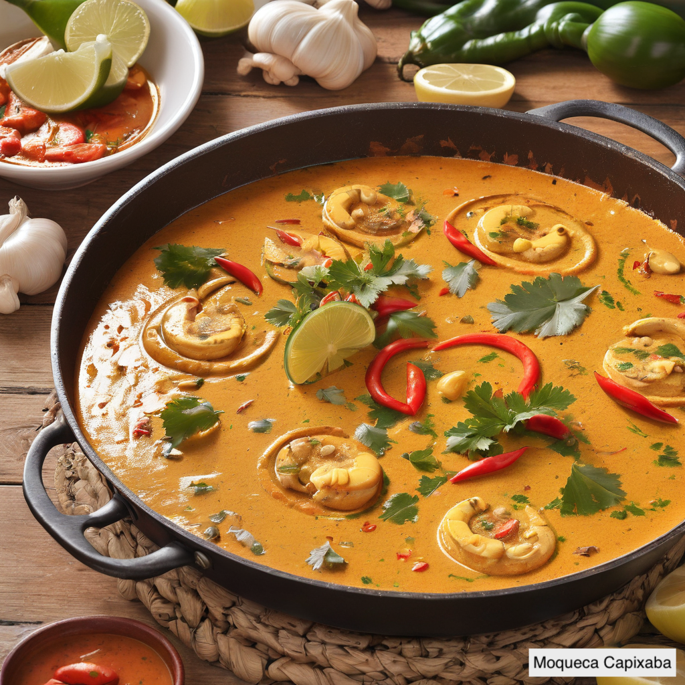

Dicionario Capixaba
-Pocar: Ao invés de falar que algo estourou, usamos a palavra "pocar". Exemplo: A bola está pocada. A única exceção é "pocar fora", que significa ir embora.
-Catar: Significa pegar ou roubar. Exemplo: "Cata o lixo do chão." ou "ela catou minha caneta pra sogra dela"
-Salta: Ao invés de falar que vamos desembarcar em algum lugar como o ônibus, falamos "saltar do ônibus".
-Gastura: Significa agonia.
-Pal de sal: Pão francês.
-Massa: Dependendo do contexto, "massa" pode realmente significar massa, mas os capixabas também usam para se referir a algo que é legal.
-Ir pra o rock: Significa sair para algum lugar com muitas pessoas cujo o objetivo é se divertir e geralmente é meio tumultuado ou bagunçado. Mesmo se você for para um pagode, funk, axé, forró e qualquer outro estilo de música, a gente fala que estamos indo para um "rock"
-Mó:Abreviação de "maior". Por exemplo, "Foi mó confusão na festa"
Terminologia que não se usa mais com frequência
Antes do termo "capixaba" se popularizar, cada cidade no Espírito Santo tinha sua própria forma específica de se referir aos seus habitantes. Esses são exemplos de algumas cidades.
- Quem nasceu em Vitória é Vitorense
-Vila Velha: Vilavelhense
-Cariacica: Cariaciquense
-Serra:Serrano(a)
-Linhares: Linharense
-Cachoeiro de Itapemirim: Cachoeirense
-Guarapari:Guarapariense
-Colatina: Colatinense
-Aracruz:Aracruzense
-Castelo: Castelense
Vitória: Vitorense
Vila Velha: Vilavelhense
Cariacica: Cariaciquense
Serra: Serrano(a)
Linhares: Linharense
Cachoeiro de Itapemirim: Cachoeirense
Guarapari: Guarapariense
Colatina: Colatinense
Aracruz: Aracruzense
Castelo: Castelense
Gastronomia

A gastronomia capixaba é uma rica expressão cultural que reflete a história e as tradições do estado. Um dos pratos mais populares é a moqueca capixaba, famosa por sua preparação sem água, apenas com vegetais e frutos do mar, e cozida em panelas de barro, produzidas artesanalmente pelas paneleiras de Goiabeiras. Diferentemente da moqueca baiana, não leva azeite de dendê nem leite de coco.
Ingredientes
• 1,5kg de peixe fresco (robalo, badejo, papa-terra, ou namorado)
• 3 maços de coentro
• 3 maços de cebolinha verde
• 2 cebolas brancas (pequenas)
• 3 dentes de alho
• 4 tomates
• 3 limões
• azeite de oliva
• sementes de urucum
• pimenta-malagueta
• óleo de soja ou algodão
• sal fino
Mode de preparo
Primeiro, limpe o peixe e corte-o em postas de 5cm de largura. Em seguida, lave as postas com limão e deixe-as de molho em água com sal fraca, reservando a cabeça para o pirão.
O próximo passo é socar alho e sal juntos e espalhar essa mistura no fundo da panela de barro. Depois, coloque um pouco de óleo de soja ou de algodão e azeite de oliva no fundo da panela e adicione a massa de alho e sal.
Retire as postas de peixe da água com sal e coloque-as na panela, virando-as para garantir uma distribuição uniforme. Em seguida, adicione coentro, tomate e cebola por cima das postas, regando com azeite e suco de limão.
Para dar cor ao peixe, frite sementes de urucum em óleo quente e despeje um pouco desse óleo por cima do peixe antes de cozinhar. Cozinhe em fogo forte por 20 a 25 minutos, verificando o sal e o limão durante o processo. Balance a panela ocasionalmente para evitar que as postas grudem no fundo.Ao servir, salpique coentro picadinho por cima do peixe.
Outro prato popular é a torta capixaba, servida durante a Semana Santa e com mais de 400 anos de história. Essa receita incorpora os frutos do mar e peixes abundantes na região litorânea, sendo um símbolo da cultura local. Durante a Quaresma, período de abstinência de carne vermelha, a torta capixaba é o prato oficial, mantendo uma tradição que atravessa séculos.
Ingredientes
• Cebola
• alho
• azeite doce
• azeitona
• limão,coentro
• cebolinha verde
• tomate (a gosto)
• 500gr de bacalhau desfiado e cozido
• ½kg de palmito natural previamente cozido
• 200gr de siri desfiado e cozido
• 200gr de caranguejo desfiado e cozido
• 200gr de camarão cozido
• 200gr de ostra cozida
• 200gr de sururu cozido
• 200gr de badejo desfiado e cozido
Modo de preparo
• Prepare um refogado com cebolas, alho, pimenta, azeite doce, azeitonas e limão.
• Leve ao fogo com o palmito natural e espere até desaparecer a água e ganhar consistência.
• Junta-se, depois de limpos, desfiados, cozidos e espremidos os ingredientes acima, mexendo até evaporar a água. Retire para esfriar um pouco e misture uma parte da espuma de 6 (seis) claras em neve com as gemas.
• Quando se adicionarem os temperos aos mariscos, deve-se colocar o bacalhau para enxugar e dar liga à massa.
• Cozinha-se à parte 6 (seis) ovos (que servirão apenas para enfeite) juntamente à azeitona e umas rodelas de cebola.
• Coloca-se a massa em uma panela de barro, leva-se ao forno, retirando-a quando a espuma estiver bem coradinha.
O pirão também é um prato típico, feito com os mesmos temperos da moqueca, mas com uma preparação diferente. É uma guarnição essencial em muitos pratos capixabas, especialmente quando preparado com a cabeça do peixe e farinha de mandioca. Já a casquinha de siri é um popular aperitivo ou até mesmo prato principal, muito requisitado nos restaurantes e bares locais. As panelas de barro não são apenas utensílios de cozinha, mas também símbolos da cultura capixaba.
Todas essas receitas vêm diretamente do site do governo do Espírito Santo.
Festas populares

Festa da Penha: Acontece em Vila Velha na segunda-feira após a Páscoa e é uma das maiores festas do Espírito Santo, mesmo sendo uma festa religiosa. Milhares de fiéis católicos participam da romaria até o Convento da Penha, onde ocorrem missas e manifestações de devoção à Nossa Senhora da Penha. Essa festa atrai turistas de todo o Brasil.
Festa da Polenta: Celebra a cultura e a gastronomia do povo italiano e possui diversas atividades, como desfiles, apresentações culturais, música ao vivo e a preparação e distribuição da polenta, prato tradicional italiano feito à base de farinha de milho. O Espírito Santo tem muitos descendentes italianos, e essa festa foi uma forma de se conectar com a cultura de seus descendentes, mas todo mundo de todas etnias e culturas podem participar. Essa festa ocorre em dois finais de semana de outubro.
Carnaval de Vitória: Geralmente acontece uma semana antes do carnaval oficial. No Carnaval de Vitória, as escolas de samba do Espírito Santo fazem um desfile.
Musica e Artesanato
A música no Espírito Santo reflete sua rica diversidade cultural, apresentando uma variedade de estilos que vão desde o tradicional congo, enraizado na cultura afrodescendente e influenciado por elementos indígenas e europeus, até manifestações contemporâneas como rock, samba, forró e música popular brasileira.
O artesanato também tem uma grande importância no Espírito Santo. A maioria dos artesanatos são feitos com materiais que são encontrados no próprio estado.Esses são alguns exemplos do artesanato capixaba:
Panelas de Barro: O artesanato em cerâmica é uma tradição antiga no Espírito Santo. Panelas, potes e utensílios domésticos são produzidos em diversas regiões do estado, com destaque para o município de Vila Velha. A panela de barro não é apenas uma panela ela faz parte da história capixaba.A técnica de fabricação de panelas de barro foi desenvolvida pelas culturas indígenas
Artesanato de Conchas:
O estado tem uma grande diversidade de conchas, servindo de inspiração para os habilidosos artesãos locais. Eles criam uma ampla gama de produtos usando esse recurso natural, como acessórios, decorações e lembranças. Piúma, um centro proeminente nesse tipo de artesanato, lidera a produção nacional. Essa tradição artesanal é um reflexo da inventividade e destreza dos residentes locais, que transformam elementos marinhos em peças encantadoras, celebrando a costa e sua herança cultural.
Arte em madeira: Em regiões rurais e entre os habitantes das comunidades de pescadores, é frequente encontrar habilidosos artesãos dedicados à manipulação da madeira, criando esculturas, mobiliário e itens ornamentais que capturam a essência da cultura regional.
Comportamento
As pessoas do Espírito Santo tendem a ser mais reservadas e, frequentemente, são vistas como mal-educadas por pessoas de outros estados. Esse tipo de comportamento viralizou nas redes sociais e outras pessoas de outros estados, e até mesmo capixabas, começaram a fazer piadas sobre isso. Por exemplo, um capixaba nativo fingiria não ter visto um conhecido na rua, mesmo que ele tenha passado do outro lado da calçada e o capixaba tenha visto a pessoa sim, porém, ignorou e tentou se esconder.